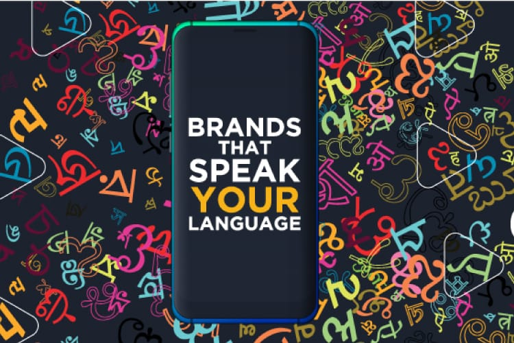

How Regional Languages Are Transforming Brand Outreach in India
Sat Nov 23 2024
How Regional Languages Are Transforming Brand Outreach in India
Introduction: Beyond Words, Into Worlds
Imagine scrolling through an app or glancing at a billboard, and instead of seeing
generic English slogans, you're greeted with words in your mother tongue. Suddenly,
the message feels personal, warm, and relatable. This is the magic of regional
languages—they don't just communicate; they connect.
In India, a country brimming with linguistic diversity, the shift to regional branding
isn't just a trend—it's a revolution. It's a movement that empowers brands to build
bridges, inspire trust, and forge lasting bonds.
India's Linguistic Landscape: An Untapped Treasure
India is a land of many languages, each one carrying its own stories, traditions, and
ways of life. While English has been the mainstay for branding, it only speaks to a
small part of the population—less than 10%. The real connection lies in regional
languages, which are far more personal and relatable.
Think about rural India, where smartphones are becoming as common as everyday
tools. Today, 299 million internet users in rural areas navigate their digital world in
their native languages, feeling more comfortable and engaged. Studies even show
that nine out of ten new internet users prefer content in their mother tongue,
proving how powerful these languages can be.
Brands relying only on English miss the chance to connect with a massive audience.
Platforms like ShareChat and Moj saw this potential and built their communities
entirely around regional languages. They didn’t just create apps—they gave millions
of people a space where their language and culture are celebrated.
In India’s vast linguistic landscape, the key to reaching hearts lies in speaking the
language people know and love. It’s not just communication; it’s about making every
word feel like home.
Success Stories: Brands Speaking the Heart's Language
The shift toward vernacular marketing has already yielded impressive success stories:
• Paper Boat: Known for its nostalgic campaigns, Paper Boat crafts regional
language advertisements that evoke childhood memories. Their Tamil and
Bengali campaigns transport customers to summer afternoons spent sipping
homemade drinks.
• Amazon and Flipkart: By offering interfaces in over 11 Indian languages, these
giants have empowered millions of first-time shoppers. This isn't just
innovation—it's inclusion.
• Thums Up: With its "Toofani Thanda" campaign in multiple Indian languages,
the brand redefined its macho identity, making it relatable to regional
audiences.
The Emotional Science of Regional Marketing
Regional marketing is more than just conveying a message—it creates an emotional
bond. When a brand uses your mother tongue, it’s not merely communicating; it’s
making you feel seen, understood, and valued. Your language holds memories,
experiences, and connections that go far beyond words. Brands that speak in a native
language immediately tap into this powerful emotional resonance. It's like hearing a
friend's voice in a crowded room—it creates an instant sense of familiarity and trust.
But regional marketing doesn’t stop at emotional resonance; it fosters a sense of
cultural pride. Campaigns in local languages celebrate the traditions and values that
make a community unique. This connection brings people closer to the brand,
making them feel as though they’re not just customers, but part of a bigger, culturally
rich community.
This deeper connection leads to higher engagement. Research shows that
multilingual campaigns have three times higher engagement than English-only ads.
Google found that 88% of Indian users are more likely to respond to ads in their local
language, showing that people are not just more engaged—they’re more likely to
take action when brands speak to them in their own language
Challenges in Regional Branding
As regional branding in India gains traction, the challenges are substantial. The sheer
diversity of languages requires significant resources for translation and localization.
Maintaining consistency in messaging across multiple languages is a delicate task—
each language demands a unique approach to convey the same brand voice.
Moreover, dialects vary widely even within a single language, posing a risk of
miscommunication or backlash. However, AI and machine learning are increasingly
helping brands overcome these hurdles, enabling more accurate and scalable
personalization of content, making it easier to connect with diverse audiences
authentically.
The Future: Hyper-Localized Branding
As internet penetration deepens in India, the next wave of regional marketing will be
hyper-localized. Imagine campaigns tailored not just to states but to specific districts,
where every cultural nuance is celebrated. Regional influencers will play a pivotal
role, bridging the gap between brands and their audiences.
The future isn't just about being seen or heard—it's about being understood.
Conclusion: Beyond Words, Into Connections
In India, where diversity is the norm, brands that embrace regional languages aren't
just selling products—they're building relationships. By speaking the language of
their audience, they're fostering trust, nostalgia, and loyalty.
The lesson is clear: to thrive in India's dynamic market, brands must go beyond words
and speak to the heart. In India, language isn't just a tool for communication—it's a
gateway to connection, belonging, and identity.
-By Bhoomi Nayak
Operations Executive E-CELL